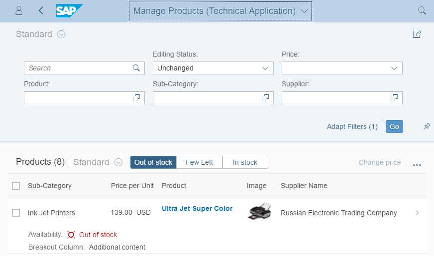
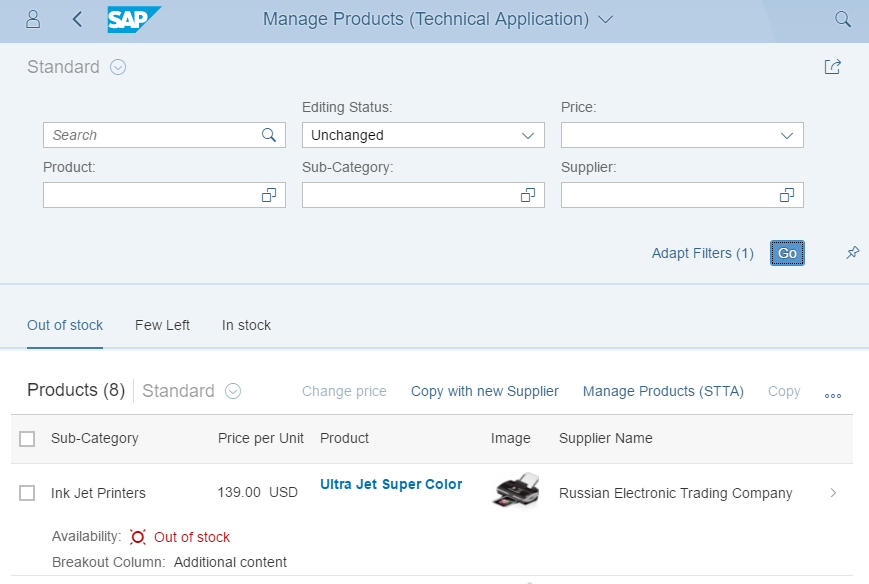
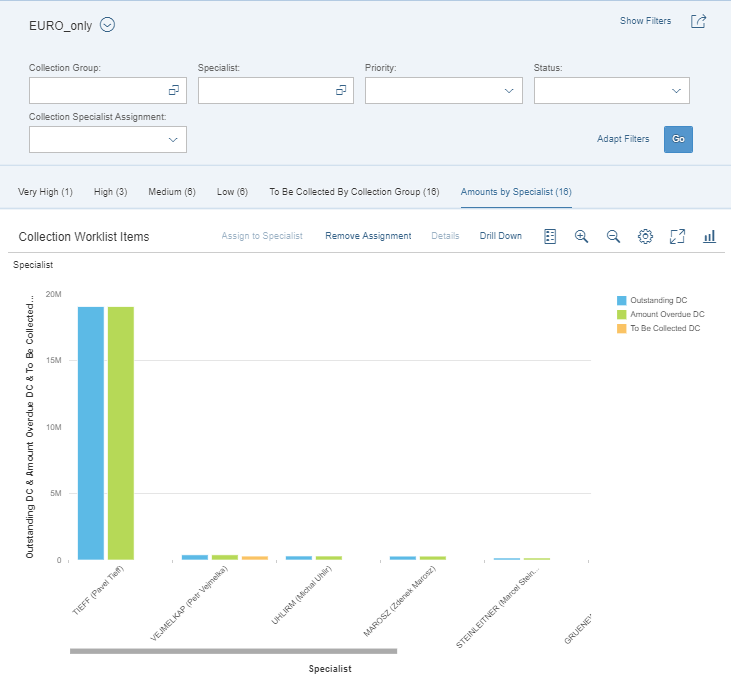

Multiple Views on List Report Tables
By default, the list report displays only one table. You can define multiple views of a table, and add a chart, if required.
This video shows the step-by-step procedure for defining multiple views:
 is not part of the SAP product documentation. Please read the legal disclaimer for video links before viewing this video.
is not part of the SAP product documentation. Please read the legal disclaimer for video links before viewing this video.You have the following options:
-
A single table for all views ("single table mode"): The UI contains a single table instance, one table toolbar, and (if activated) one table variant management. To switch between the views, a segmented button is rendered in the table toolbar. If there are more than three views, a select control is rendered instead of a segmented button.
Single Table Mode A separate table for each view ("multiple table mode"): If there are n views, the UI contains n table instances. This results in n separate table toolbars and n separate table variant managements. An icon tab bar is rendered above the table for switching between the views (table instances). Only the table on the currently selected tab is visible.
In multiple table mode, in addition to tables, you can also display charts on specific tab pages. Tables are displayed by default.Multiple Table ModeMultiple Table Mode with Charts
-
If you only want to describe which data should be displayed in a view, you can define a SelectionVariant containing filter criteria for the data. See Defining Multiple Views on a List Report Table - Single Table Mode.
-
If you also want to describe how the data should be displayed (for example, different sort orders in a table or a different visualization in a table or chart), you can define a SelectionPresentationVariant. Note that you can use this annotation only for multiple table mode and multiple table mode with charts. See Defining Multiple Views on a List Report Table - Multiple Table Mode.
- If all you want to do is use a different visualization, you can define a PresentationVariant.
 .
.